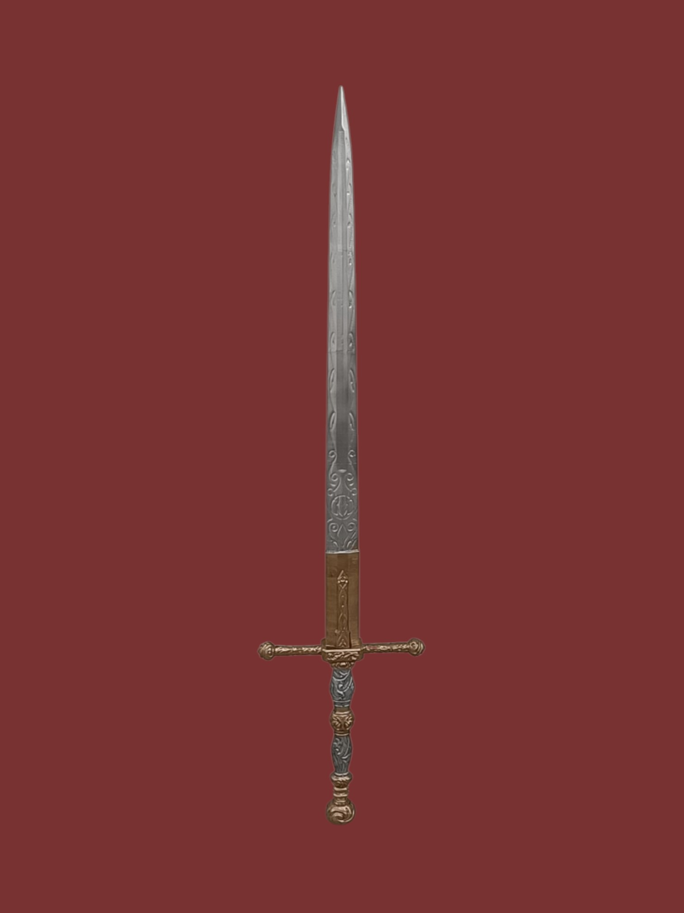
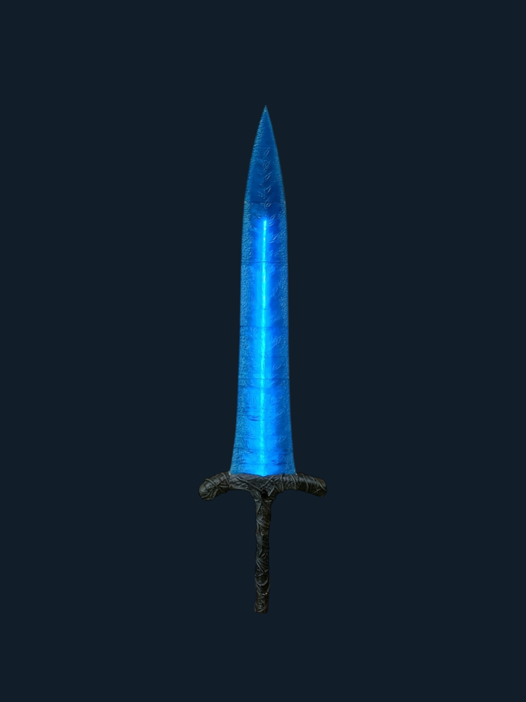
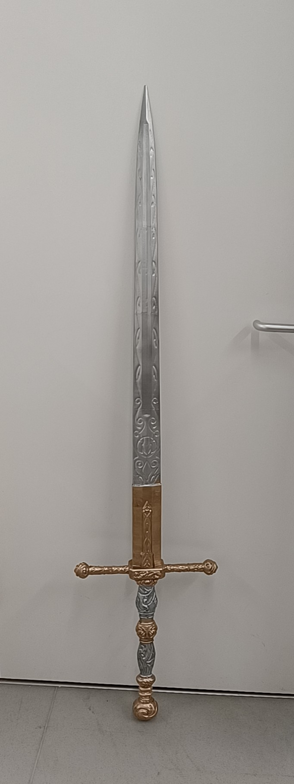

In curious of how it is made, I make it myself.
- 
Lordsworn's Greatsword
Well-crafted straight sword with an illustrious design, wielded by regulars of a lord's army.
Through blackened and damaged by years of use, it appears to have otherwise been kept in a serviceable condition, despite the soldiers having long since lost their minds. - 
Dark Moon Greatsword
A Moon Greatsword, bestowed by a Carian queen upon her spouse to honor long-standing tradition. One of the legendary armaments.
Ranni's sigil is a full moon, cold and leaden, and this sword is but a beam of its light. - 
Gö 1 Wolf
The model was a single-seat glider produced in Germany from 1935. This airplane is a fantastic trainer for those who want to try a 3D printed airplane for the first time.
Credit to Eclipson Airplanes for the Gö 1 Wolf model -
Nothing Better Than Chilling With Quirrel On a Bench